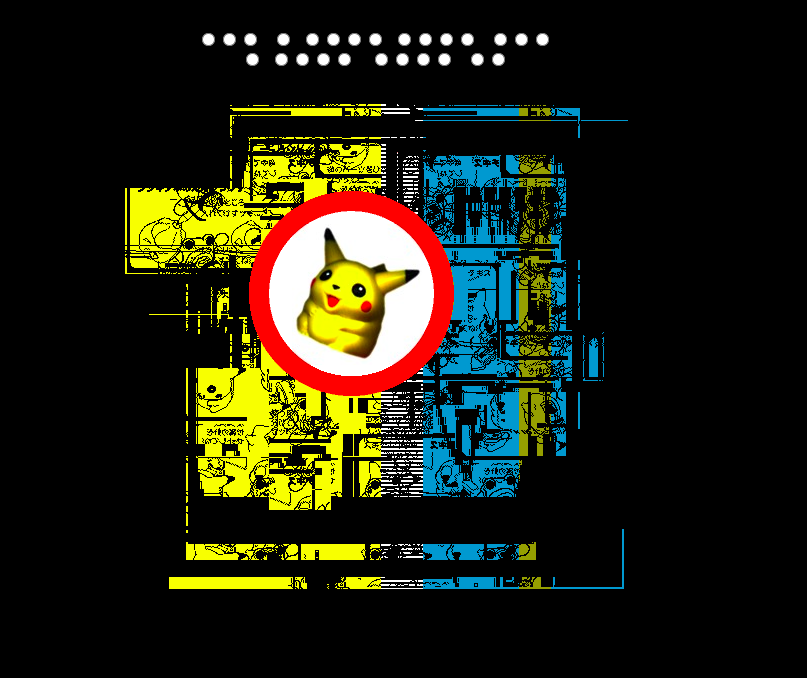
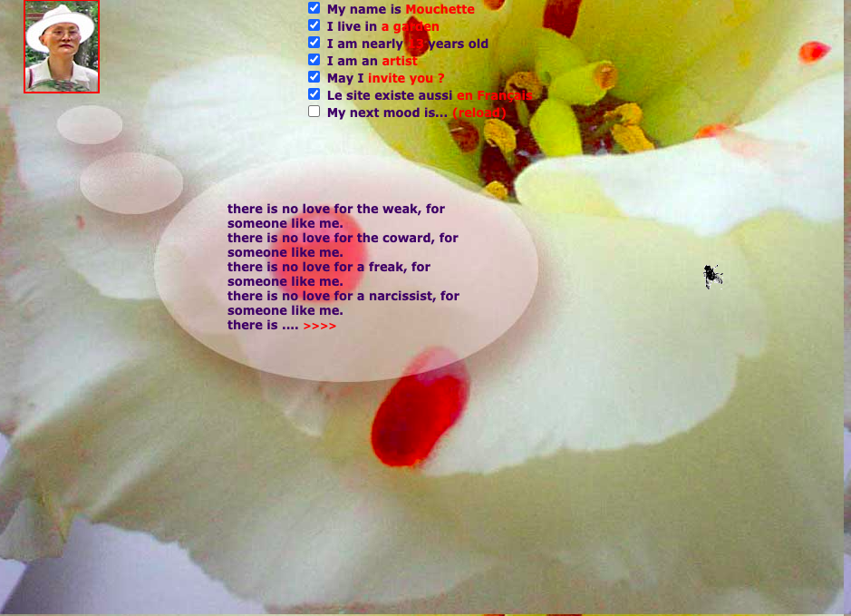
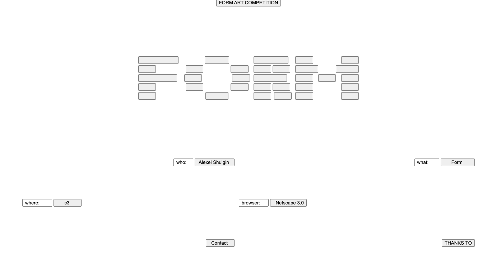

[ ABOUT THE EXHIBITION ]
When the internet
had no rules.
The Weird Web is a collection of three net artworks from the late 90s, when the internet was just beginning to form a visual identity. This time, artists were playing with the fundamental elements of the website, testing out what people thought websites should be like.
Superbad (1997), by Ben Benjamin, employs unusual graphics and hyperlinks that change unpredictably to make a bizarre browsing experience. Martine Neddam's Mouchette.org (1996) is the personal website of a young girl that delves into the concepts of identity and other more disturbing themes through images, text, and interaction. Form Art (1997) by Alexei Shulgin uses common HTML elements such as buttons and input fields to create visual compositions.
The sites are quite distinct, but they all have a common desire to alter the way that people use common Internet functions. As a group they show how early web artists used the web as a creative area instead of just a place to present information.
[ WORK 01 / 03 ]
SUPERBAD.
Superbad is a collection of strange, colorful webpages connected through unexpected hyperlinks. Rather than following a clear path, visitors explore confusing images, unusual layouts, and unpredictable destinations.
VISIT WEBSITE ↗
[ WORK 02 / 03 ]
MOUCHETTE.
Mouchette.org appears to be the personal website of a young girl. Through photographs, unusual questions, and interactive pages, the work creates an unsettling experience that explores identity and the relationship between visitors and online personas.
VISIT WEBSITE ↗
[ WORK 03 / 03 ]
FORM ART.
Form Art takes basic HTML elements such as buttons, checkboxes, and text fields and arranges them into abstract visual designs. Instead of using these elements for their usual purposes, Shulgin turns the website's interface itself into the artwork.
VISIT WEBSITE ↗